from katlas.core import *
import pandas as pdScoring evaluation
Load references:
pspa = pd.read_parquet('raw/overlap_pspa.parquet')LO = pd.read_parquet('out/CDDM_pssms_LO_eval_psp_02.parquet')LO.index = LO.index.str.split('_').str[1]
pspa.index = pspa.index.str.split('_').str[1]LO = LO[LO.index.isin(pspa.index)].copy()LO.shape(312, 943)# log odds
LO = pd.read_parquet('out/CDDM_pssms_LO.parquet').loc[pspa.index]
LO_upper = pd.read_parquet('out/CDDM_pssms_LO_eval_upper.parquet').loc[pspa.index]# CDDM pssms
pssms = pd.read_parquet('out/CDDM_pssms_eval.parquet').loc[pspa.index]
pssms_upper = pd.read_parquet('out/CDDM_pssms_eval_upper.parquet').loc[pspa.index]LO.shape,LO_upper.shape,pssms.shape,pssms_upper.shape((312, 943), (312, 943), (312, 943), (312, 943))pspa.index.str.split('_').str[1].duplicated().sum()np.int64(0)LO.index = LO.index.str.split('_').str[1]
LO_upper.index = LO_upper.index.str.split('_').str[1]
pssms.index = pssms.index.str.split('_').str[1]
pssms_upper.index = pssms_upper.index.str.split('_').str[1]Log-odds + sum
predict_kinase("PSVEPPLsQETFSDL",ref = LO,func=sumup)considering string: ['-7P', '-6S', '-5V', '-4E', '-3P', '-2P', '-1L', '0s', '1Q', '2E', '3T', '4F', '5S', '6D', '7L']index
Q13535_ATR 11.215
Q13315_ATM 10.362
P78527_DNAPK 6.586
O96017_CHK2 2.101
P49840_GSK3A 1.719
...
Q6P2M8_CAMK1B -90.700
O00311_CDC7 -90.895
Q9NYV4_CDK12 -107.828
P15056_BRAF -135.335
Q59H18_TNNI3K -139.231
Length: 333, dtype: float64# upper
predict_kinase("PSVEPPLsQETFSDL",ref = LO_upper,func=sumup)considering string: ['-7P', '-6S', '-5V', '-4E', '-3P', '-2P', '-1L', '0s', '1Q', '2E', '3T', '4F', '5S', '6D', '7L']index
Q13535_ATR 10.045
Q13315_ATM 8.797
P78527_DNAPK 5.814
O96017_CHK2 3.416
P49761_CLK3 2.908
...
O75385_ULK1 -67.640
Q9NYV4_CDK12 -67.855
Q6P2M8_CAMK1B -73.139
Q59H18_TNNI3K -97.097
P15056_BRAF -114.566
Length: 333, dtype: float64PSSM + multiply
# standard
predict_kinase("PSVEPPLsQETFSDL",ref = pssms,func=multiply_23)considering string: ['-7P', '-6S', '-5V', '-4E', '-3P', '-2P', '-1L', '0s', '1Q', '2E', '3T', '4F', '5S', '6D', '7L']index
Q13535_ATR 15.288
Q13315_ATM 14.435
P78527_DNAPK 10.660
O96017_CHK2 6.174
P49840_GSK3A 5.792
...
Q6P2M8_CAMK1B -86.627
O00311_CDC7 -86.822
Q9NYV4_CDK12 -103.755
P15056_BRAF -131.262
Q59H18_TNNI3K -135.158
Length: 333, dtype: float64# upper
predict_kinase("PSVEPPLSQETFSDL",ref = pssms_upper,func=multiply_20)considering string: ['-7P', '-6S', '-5V', '-4E', '-3P', '-2P', '-1L', '0S', '1Q', '2E', '3T', '4F', '5S', '6D', '7L']index
Q13535_ATR 14.817
Q13315_ATM 13.569
P78527_DNAPK 10.586
O96017_CHK2 8.188
P49761_CLK3 7.680
...
O75385_ULK1 -62.868
Q9NYV4_CDK12 -63.083
Q6P2M8_CAMK1B -68.367
Q59H18_TNNI3K -92.325
P15056_BRAF -109.794
Length: 333, dtype: float64Evaluate on test set
df =pd.read_parquet('out/CDDM_test_set.parquet')df['site_seq_upper'] = df.site_seq.str.upper()df = df[df.kinase_protein.isin(pspa.index)].copy()df.shape(2484, 24)ks = Data.get_ks_dataset()df_tyr.source.value_counts()source
Sugiyama 7435
EPSD|PSP 77
SIGNOR|EPSD|PSP 67
SIGNOR|ELM|iPTMNet|EPSD|PSP 49
GPS6|SIGNOR|ELM|iPTMNet|EPSD|PSP 41
...
SIGNOR|EPSD|PSP|Sugiyama 1
GPS6|SIGNOR|ELM|EPSD 1
GPS6|ELM|EPSD|Sugiyama 1
SIGNOR|iPTMNet 1
iPTMNet|PSP 1
Name: count, Length: 65, dtype: int64df_tyr = df[df.kinase_group =='TK'].copy().reset_index(drop=True)
df_st = df[df.kinase_group !='TK'].copy().reset_index(drop=True)df_tyr.site_seq.str[20].value_counts()site_seq
y 380
s 4
t 2
Name: count, dtype: int64df_st.site_seq.str[20].value_counts()site_seq
s 1512
t 570
y 16
Name: count, dtype: int64df_tyr = df_tyr[df_tyr.site_seq.str[20]=='y'].copy().reset_index(drop=True)df_st = df_st[df_st.site_seq.str[20]!='y'].copy().reset_index(drop=True)df_tyr.shape(380, 24)df_st.shape(2082, 24)data = Data.get_ks_dataset()psp = data[data.source.str.contains('PSP')].copy()psp = psp[psp.kinase_protein.isin(pspa.index)].copy()psp_tyr = psp[psp.kinase_group =='TK'].copy().reset_index(drop=True)psp_st = psp[psp.kinase_group !='TK'].copy().reset_index(drop=True)psp_tyr.shape,psp_st.shape((1964, 21), (10675, 21))Scoring
PSPA PSSM + multiply
PSPA PSSM + multiply + pct
CDDM PSSM + multiply
CDDM PSSM + multiply + pct
CDDM LO + sumup
CDDM LO + sumup + pct
CDDM PSSM upper + multiply
CDDM PSSM upper + multiply + pct
CDDM LO upper + sumup
CDDM LO upper + sumup + pct
Implement
PSPA upper + multiply
df.kinase_protein0 SGK1
1 SGK1
2 SGK1
3 SGK1
4 SGK1
...
17944 CK1G3
17945 CK1G3
17946 CK1G3
17947 CK1G3
17948 CK1G3
Name: kinase_protein, Length: 17949, dtype: objectgroup_map = df[['kinase_protein','kinase_group']].drop_duplicates().set_index('kinase_protein')['kinase_group']TK = group_map[group_map=='TK'].index
ST = group_map[group_map!='TK'].indexpspa_tk = pspa[pspa.index.isin(TK)].copy()
pspa_st = pspa[pspa.index.isin(ST)].copy()LO_tk = LO[LO.index.isin(TK)].copy()LO_tk.shape(71, 943)out = predict_kinase_df(df_tyr,seq_col='site_seq',ref=LO_tk,func=sumup)input dataframe has a length 380
Preprocessing
Finish preprocessing
Merging reference
Finish mergingdef get_kinase_rank(row_index,df):
kinase = df.loc[row_index, 'kinase_protein']
scores = out.loc[row_index]
ranked = scores.sort_values(ascending=False)
rank = ranked.index.get_loc(kinase) + 1 # +1 to make rank start from 1
return rankdf_tyr['rank'] = out.index.to_series().apply(lambda idx: get_kinase_rank(idx,df_tyr))df_tyr['rank'].mean()np.float64(22.426315789473684)df_tyr['rank'].mean()np.float64(24.739473684210527)Top 5/10
def top_k_accuracy(reference_df, result_df, k):
def is_in_top_k(row_index):
kinase = reference_df.loc[row_index, 'kinase_protein']
scores = result_df.loc[row_index]
top_k = scores.nlargest(k).index
return kinase in top_k
return result_df.index.to_series().apply(is_in_top_k).mean()top1 = top_k_accuracy(df_tyr, out, 1)
top5 = top_k_accuracy(df_tyr, out, 5)
top10 = top_k_accuracy(df_tyr, out, 10)print(f"Top-1 accuracy: {top1:.3f}")
print(f"Top-5 accuracy: {top5:.3f}")
print(f"Top-10 accuracy: {top10:.3f}")Top-1 accuracy: 0.087
Top-5 accuracy: 0.287
Top-10 accuracy: 0.382Groupby kinase subfamily
reference_df =df_tyr.copy()result_df = out.copy()def top_k_accuracy_group(group_indices, k):
def is_correct(row_index):
kinase = reference_df.loc[row_index, 'kinase_protein']
scores = result_df.loc[row_index]
top_k = scores.nlargest(k).index
return kinase in top_k
return pd.Series(group_indices).apply(is_correct).mean()# Group indices by subfamily
grouped = df_tyr.groupby('kinase_subfamily').groups # dict: subfamily → list of indices
# Compute accuracy per subfamily
topk_scores = {
subfam: top_k_accuracy_group(indices, k=10)
for subfam, indices in grouped.items()
}
# Convert to DataFrame for easy viewing
topk_df = pd.DataFrame.from_dict(topk_scores, orient='index', columns=['topk_accuracy']).sort_values('topk_accuracy', ascending=False)topk_df['topk_accuracy'].plot.bar(figsize=(20,4))
# TODO: add hue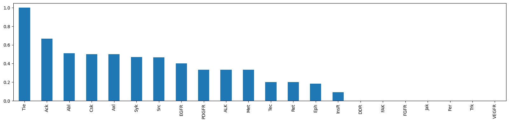
By kinase group?
Bar plot of rank across kinase group
data.columnsIndex(['kin_sub_site', 'substrate_uniprot', 'site', 'source',
'substrate_genes', 'substrate_phosphoseq', 'position', 'site_seq',
'sub_site', 'substrate_sequence', 'kinase_on_tree', 'kinase_genes',
'kinase_group', 'kinase_family', 'kinase_subfamily', 'kinase_pspa_big',
'kinase_pspa_small', 'kinase_coral_ID', 'num_kin', 'kinase_id',
'source_len', 'kinase_uniprot', 'rank'],
dtype='object')plot_bar(data,value='rank',group='kinase_subfamily',dots=False,figsize = (30,5))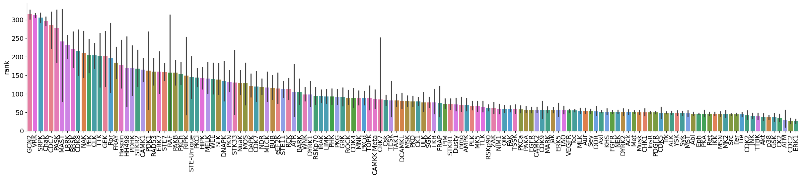
plot_bar(data[data.kinase_group=='TK'],value='rank',group='kinase_subfamily',dots=False,figsize = (30,5))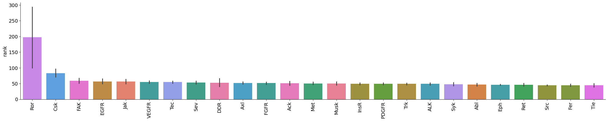
plot_bar(data[data.kinase_group!='TK'],value='rank',group='kinase_subfamily',dots=False,figsize = (30,5))
AUCDF
from katlas.plot import *import numpy as nppsp_tyr.source.value_counts()source
EPSD|PSP 482
PSP 344
SIGNOR|EPSD|PSP 287
SIGNOR|PSP 195
SIGNOR|ELM|iPTMNet|EPSD|PSP 150
GPS6|SIGNOR|ELM|iPTMNet|EPSD|PSP 109
SIGNOR|iPTMNet|EPSD|PSP 67
GPS6|SIGNOR|ELM|iPTMNet|EPSD|PSP|Sugiyama 34
EPSD|PSP|Sugiyama 30
ELM|iPTMNet|EPSD|PSP 29
GPS6|SIGNOR|EPSD|PSP 25
PSP|Sugiyama 23
SIGNOR|ELM|iPTMNet|EPSD|PSP|Sugiyama 21
GPS6|EPSD|PSP 17
GPS6|PSP 16
GPS6|SIGNOR|ELM|EPSD|PSP 15
iPTMNet|EPSD|PSP 14
GPS6|SIGNOR|PSP 13
GPS6|SIGNOR|iPTMNet|EPSD|PSP 12
SIGNOR|EPSD|PSP|Sugiyama 11
SIGNOR|ELM|iPTMNet|PSP 8
SIGNOR|ELM|PSP 8
GPS6|ELM|iPTMNet|EPSD|PSP 8
SIGNOR|PSP|Sugiyama 6
GPS6|SIGNOR|EPSD|PSP|Sugiyama 6
SIGNOR|iPTMNet|PSP 5
GPS6|EPSD|PSP|Sugiyama 5
GPS6|SIGNOR|ELM|EPSD|PSP|Sugiyama 5
GPS6|ELM|EPSD|PSP 4
SIGNOR|ELM|EPSD|PSP|Sugiyama 3
ELM|PSP 2
ELM|iPTMNet|EPSD|PSP|Sugiyama 2
SIGNOR|ELM|EPSD|PSP 1
GPS6|SIGNOR|ELM|PSP 1
ELM|iPTMNet|PSP 1
ELM|EPSD|PSP 1
GPS6|SIGNOR|PSP|Sugiyama 1
SIGNOR|iPTMNet|EPSD|PSP|Sugiyama 1
GPS6|ELM|iPTMNet|EPSD|PSP|Sugiyama 1
iPTMNet|PSP 1
Name: count, dtype: int64get_AUCDF(df_tyr,'rank')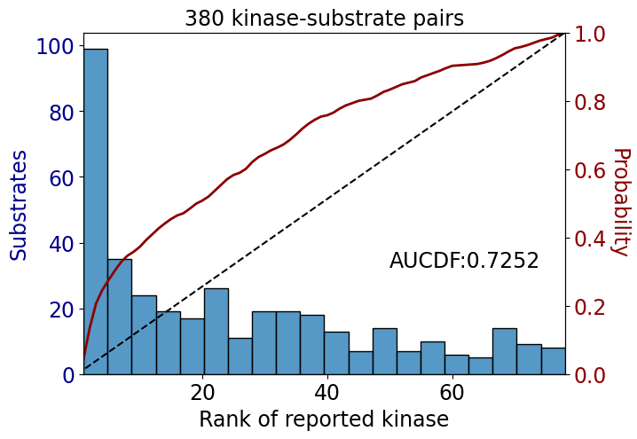
np.float64(0.725206611570248)get_AUCDF(psp_tyr,'rank')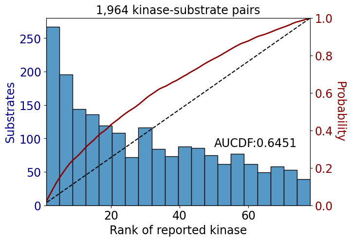
np.float64(0.6451329044786989)get_AUCDF(psp_tyr,'rank')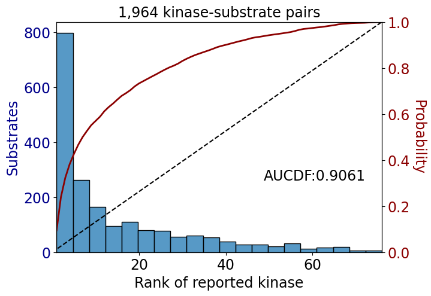
np.float64(0.9060721987810595)get_AUCDF(df_tyr,'rank')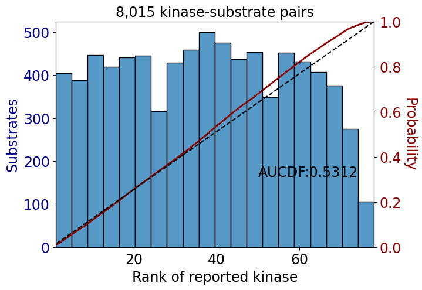
np.float64(0.53116507722515)get_AUCDF(psp_tyr,'rank')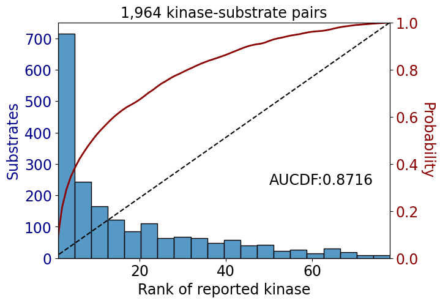
np.float64(0.8715525334280566)get_AUCDF(psp_tyr,'rank')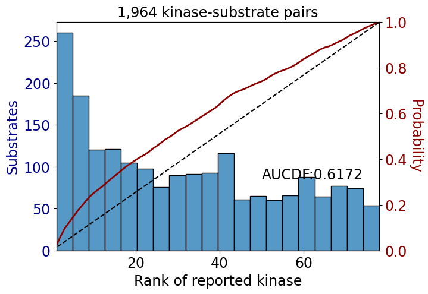
np.float64(0.6171673558333277)get_AUCDF(df_tyr,'rank')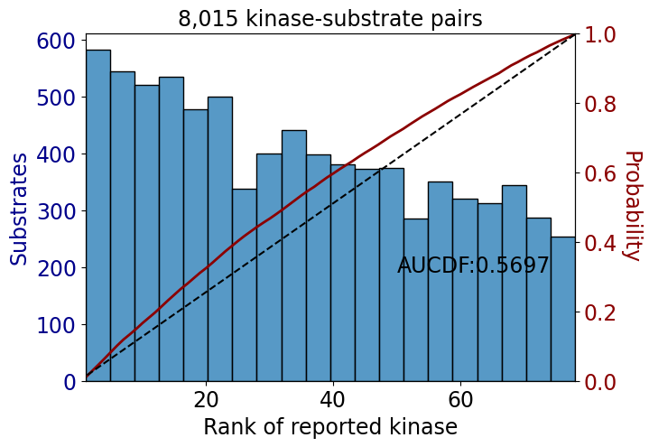
np.float64(0.5697483817509086)get_AUCDF(data,'rank')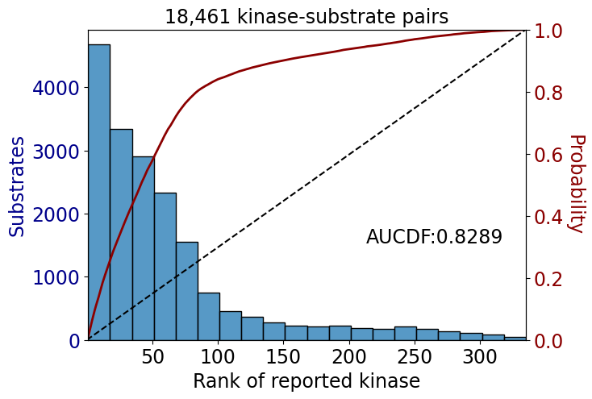
np.float64(0.8289094824229805)data_tk = data[data.kinase_group=='TK']
data_st = data[data.kinase_group!='TK']get_AUCDF(data_tk,'rank')
get_AUCDF(data_st,'rank')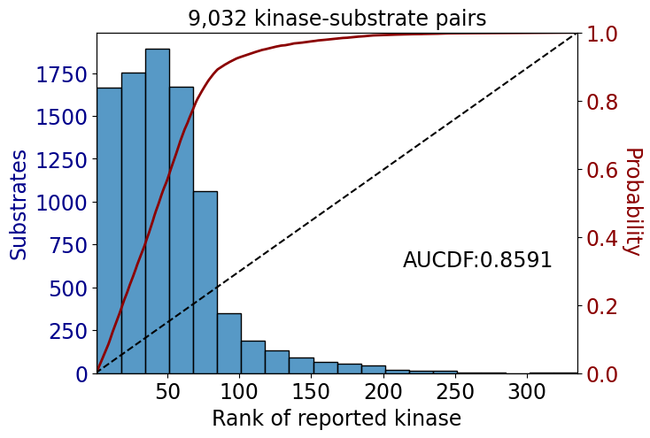
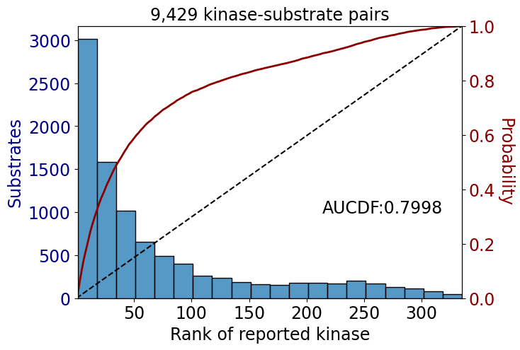
np.float64(0.7998083324521585)data['rank'].hist(bins=50)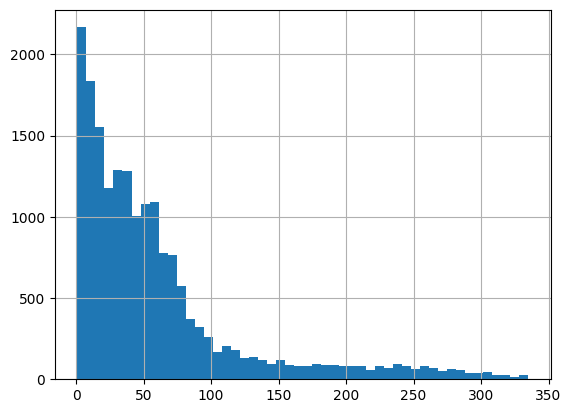